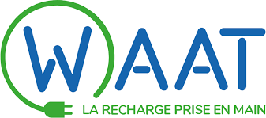
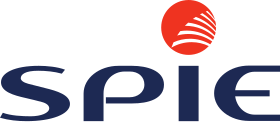

Expériences professionnelles
- WAAT - Administrateur systèmes
réseaux / Développeur

Opérateur français de bornes de recharge pour véhicules électriques, à l’attention de la Copropriété, du Tertiaire, des Bailleurs et de la Promotion Immobilière. Cliquez ici pour en savoir un peu plus sur mes missions
-
Point service mobiles Corbeil-essonnes - Développeur
Chaîne nationale spécialisée dans la réparation de smartphones et tablettes. Slogan "Réparer plus pour jeter moins". Agréé par les constructeurs de téléphonie, Point Service Mobiles délivre un service rapide de proximité pour la réparation des Smartphones et objets connectés. Grâce à la construction d’un réseau de 200 Point Service Mobiles, la société est la première en France dans son secteur et développe, depuis fin 2013, son implantation à l’international sous l’enseigne Phone Service Center. Cliquez ici pour en savoir un peu plus sur mes missions
-
Spie - Technicien électrique

SPIE France est un acteur majeur de la transition énergétique et de la transformation numérique du marché français Cliquez ici pour en savoir un peu plus sur mes missions
Formations
- Responsable développeur web et mobile – EPITECH
Apprentissage de la méthode pédagogie par projets. Développement web, mobile et logiciel, UX Sécurité, DevOps, Transformation Digitale
- Brevet de technicien supérieur SIO (option SLAM)
Matières principales : Informatique, mathématiques, économie, management, droit informatique, anglais, culture générale...
- Baccalauréat Professionnel Electrotechnique
Matières principales : Mathématiques, physique-chimie, électricité, histoire, géographie, prévention santé et environnement, sport, arts appliqués, français, anglais